Operating Documentation
Direction 5500113, Rev# 3
Discovery MR750 3.0T Service Methods
Module Version 2.0, Version Date 7/15/10
Operating Documentation |
| Required Persons | Preliminary Reqs | Procedure | Finalization |
|---|---|---|---|
| 1 | Not Applicable | 45 mins | Not Applicable |
This procedure outlines the necessary steps for replacing the cradle latch housing for a 32-channel system or a 16-channel system. Although it should be noted that the 16-Channel system does not allow for the complete removal of the cradle assembly for ease of work.
| ||||
| PINCHED FINGERS | ||||
| FORWARD MOVEMENT OF CRADLE CAN PINCH FINGER WHILE HOLDING DOWN CRADLE LATCH BLOCK. | ||||
| MOVE CRADLE FORWARD SLOWLY AND DELIBERATELY UNTIL BOTTOM EDGE OF CRADLE SUFFICIENTLY COVERS TOP OF CRADLE LATCH BLOCK WHERE YOU CAN REMOVE YOUR FINGER FROM BLOCK. |
Undock the patient table.
| NOTE: | Removing the table from the magnet room depends entirely on servicing needs. |
Hold down the cradle latch block and press the cradle release button at the same time.
Illustration 1: Cradle Removal

While holding down the cradle latch block and pressing the cradle release button, slide the cradle forward enough so it covers the top area of the latch block. Let go of the cradle latch block and cradle release button.
Push in the right actuator on the table front base.
Illustration 2: Table Front Base

| NOTE: | Pressing the actuator button engages the secondary cradle latch cable and causes the pin stop to move down flush with the table top surface, allowing the cradle to slide forward. |
For a 16-channel system, prop up the cradle (see below) or remove it from the patient table to perform desired maintenance.
For a 32-channel system, do one of the following:
To remove the cradle from the table:
Use wood blocks (or similar) to prop up the rear of the cradle at least 12 inches above the table top to expose the cable take-up assembly.
Remove screws and cable cover.
| NOTE: | These are specific, pure-brass screws. Do not mix up or replace with standard brass screws. |
Remove the four screws.
Remove the two coil connector screws.
To partially remove the cradle from the table:
Slide the cradle forward far enough to clear the cradle guide rail latches at the rear of the table.
Use wood blocks (or similar) to prop up the front of the cradle.
Illustration 3: Propping Up the Back of the Cradle

With the cradle raised, remove the cable covers at the head of the cradle held by two screws on each side. See below.
Illustration 4: Cable Cover Removal
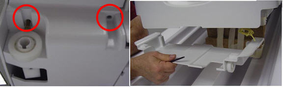
Untie the knot in the Kevlar cord. A scribe or other tool may be needed to loosen the knot. See below.
Illustration 5: Kevlar Cord Knot and Release Lever Screw

Remove the screw on the bottom of the release lever that holds the Kevlar cord in place. See above.
Pull out the rivet from the side of the release lever, noting that the Kevlar cord is positioned over the rivet. See below.
Illustration 6: Release Lever Rivet

Pull the Kevlar cord through the release lever approximately 6 inches. DO NOT pull the cord out of the release lever completely.
Illustration 7: Loosen Kevlar Cord
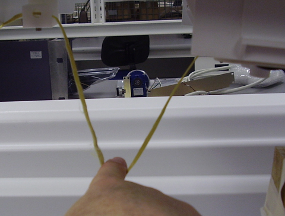
Remove the blocks or other structure used to elevate the cradle. Put the cradle back down so that there is approximately 18 inches overhang at the foot of the table. See below.
Illustration 8: Cradle Position
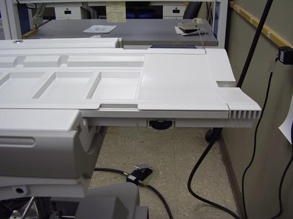
Pull the cradle hinge pin out. The cradle hinge pin can only be removed on the left side of the table. Push out the pin on the side using large needle nose pliers. See below.
Illustration 9: Remove Hinge Pin

After the hinge pin is removed, slide the front cradle section out. See below.
Illustration 10: Extend Cradle Section
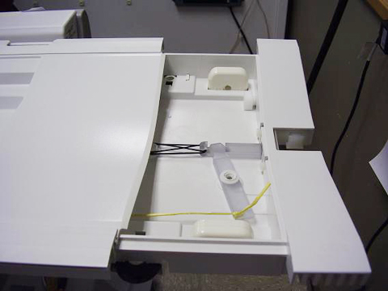
Remove the rubber latch spring. See below.
Illustration 11: Remove Latch Spring
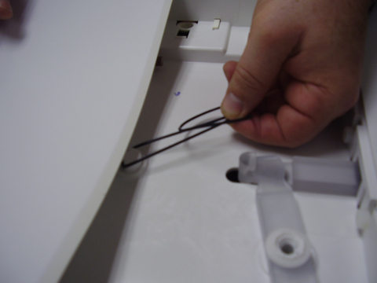
Remove the two nylon screws. See below.
Illustration 12: Remove Nylon Screws
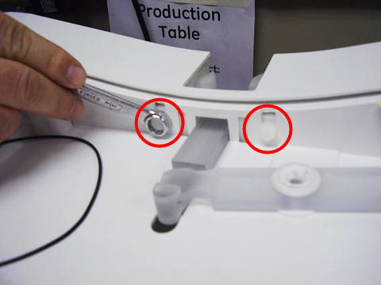
Unhook the release lever from the release bar. This is accomplished by pulling the release bar, lifting slightly, and away from the lever. See below. The latch assembly will then be free to pull down and remove.
Illustration 13: Remove Release Lever
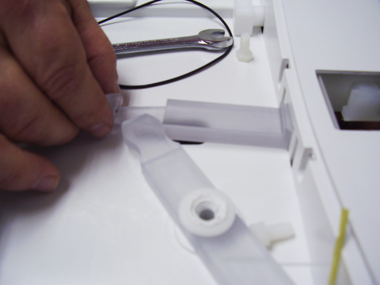
| NOTE: | There are two Delrin springs installed on each side of the latch assembly. These springs are required for reuse with the new cradle latch assembly. |
Remove the cradle latch assembly from table cradle.
Remove the two plastic screws on top of the removed latch assembly. Then remove the latch blocks. Note the orientation of the angles on the latch blocks for installing the new cradle latch assembly. See below.
Illustration 14: Cradle Latch Disassembly
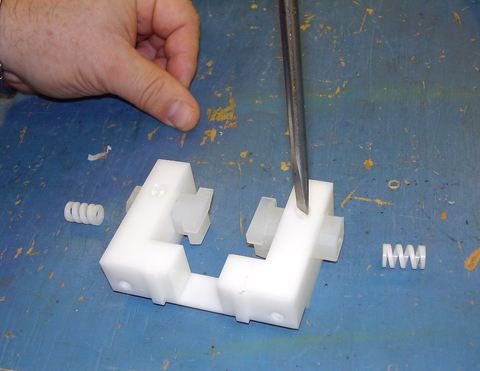
Install latch blocks and plastic screws into the new latch assembly. Make sure the screws go through the slots on the latch blocks. See below. When assembled properly, the latch blocks will have limited side-to-side movement but will not fall out of the assembly.
Illustration 15: New Cradle Latch Assembly
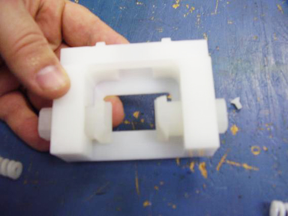
After the new cradle latch assembly is assembled, position the flat side of the latch blocks on the bottom. See below.
Illustration 16: Latch Block Orientation

Install the new cradle latch assembly into the table as shown below.
Illustration 17: Latch Installation

Install nylon screws. See Illustration 12.
Install the new release bar with the new latch assembly. This requires lifting the end of the release lever in order to place the release bar into the guide slot as performed in Removing the Cradle Latch Housing, Step 17.
Replace the rubber latch spring as shown below.
Illustration 18: Reinstall Latch Spring

Position the front cradle plunger onto the cradle rod. See below.
Illustration 19: Cradle Rod Re-Installation
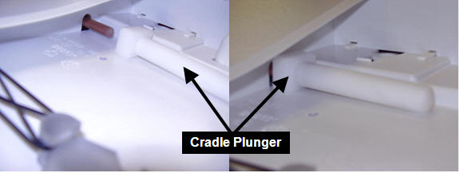
Slide the cradle back together. Install the hinge rod. A hammer may be required to tap the hinge rod back into position. See below.
Illustration 20: Hinge Pin Installation
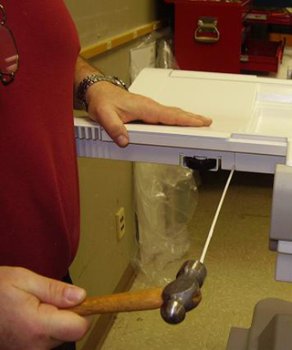
Lift the cradle and support it to gain access to the Kevlar cord. See Illustration 3.
Insert the rivet back into the release lever, ensuring that the Kevlar cord is routed OVER the rivet when it is installed as shown Illustration 6. Pull the Kevlar cord taut without causing the release bar to protrude into the latch housing. The illustration below shows that the lever should be pushed toward the front of the cradle when performing this step.
Illustration 21:
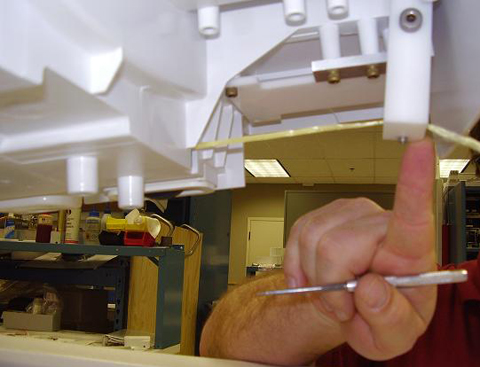
Verify that the release mechanism is not pulled out, then tighten the screw in the release lever.
Tie a new knot in the Kevlar cord running through the release lever. See Illustration 5.
Install the covers. See Removing the Cradle Latch Housing, Step 7.
Perform Cradle Release Block Adjustment.
Verify that the cradle attaches to the LPCA and the latch mechanism operates properly.